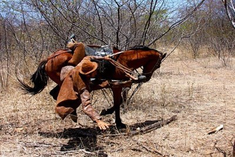
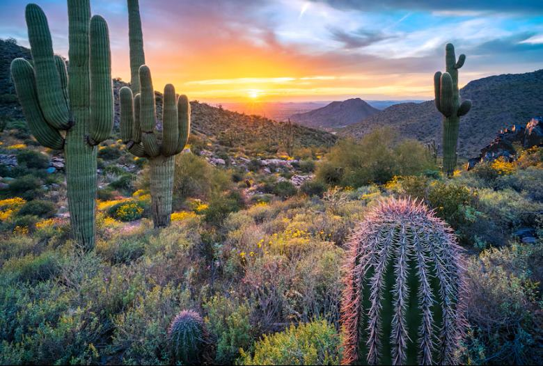
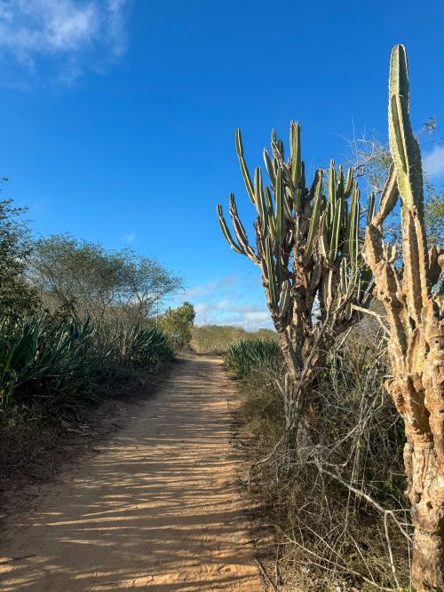
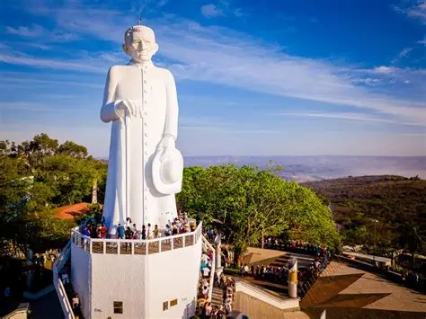
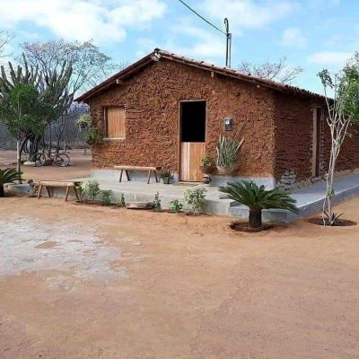

O Vaqueiro
Figura de couro, gibão e coragem. Desbrava a caatinga atrás do gado, com aboio que ecoa no sertão. Símbolo de resistência.

Onde o chão racha, o povo não se curva. Conheça a resistência do vaqueiro e do sertanejo.

Figura de couro, gibão e coragem. Desbrava a caatinga atrás do gado, com aboio que ecoa no sertão. Símbolo de resistência.

Único bioma só do Brasil. Quando chove, fica verde. Na seca, revela o chão rachado e os mandacarus de pé. Vida que teima.

Padre Cícero em Juazeiro, Canudos e as procissões. A fé move o sertanejo mais que a chuva. Chapéu na mão e reza forte.

Casa de barro, fogão a lenha e farinha na lata. Simplicidade que alimenta o Brasil com baião, carne de sol e paçoca.